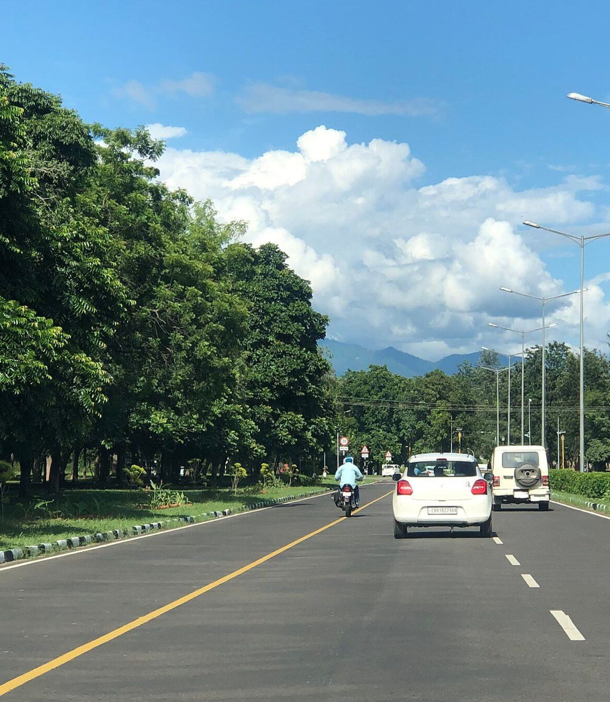
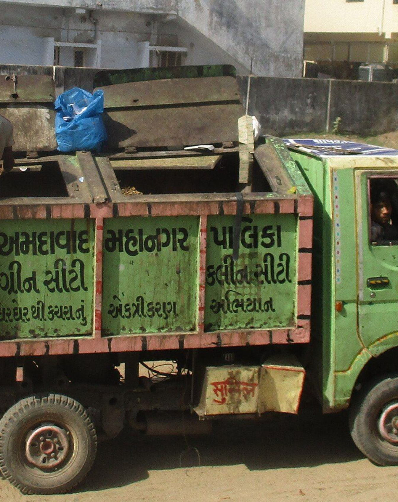

Team Introduction & Contributions
Chandigarh University engineering squad bridging high-throughput APIs, edge computer vision, and spatial WebGL.
AK
Akshat Kaushik
Full-stack & APIs
async API architecture, Redis integration, frontend state
AT
Aaditya Tomar
AI/ML & Computer Vision
YOLOv8 fine-tuning, homography, edge inference
AY
Aditya Yadav
Geospatial & 3D WebGL
React Three Fiber digital twin, Deck.gl layers
AK
Aayush Kaushik
Cloud & Deployment
Docker, sub-50ms WebSockets, CI/CD, PostGIS
Problem Statement
Urban Growth Fractures Civic Infrastructure into Blind Silos
THE CORE CRISIS
Rapid urbanization forces Sanitation, Mobility, and Emergency Services into isolated operational silos, causing delayed dispatches, unmonitored waste accumulation, and fuel waste.
TARGET AUDIENCE
Municipal Corporations, City Traffic Police, Emergency First Responders (Ambulance/Fire), and Daily Urban Commuters.
WHY IT MATTERS
Fragmented civic data causes life-threatening emergency corridor delays, severe neighborhood waste accumulation, and uncoordinated traffic gridlocks.

Photo: Unpetitprole, CC BY-SA 4.0, Wikimedia Commons
Problem Context & Existing Solutions
Current smart city deployments fail due to hardware fragility, theft, and isolated data architectures.
EXISTING SMART CITY IOT
Physical Hardware Traps
Rely on physical ultrasonic bin sensors and road magnetometer pucks prone to vandalism, theft, weathering, and recurrent battery maintenance costs.
CURRENT OPERATIONAL STATE
Fragmented Applications
Isolated point tools: standalone parking apps, fixed-schedule garbage collection routes, and manual officer traffic signal overriding.
IDENTIFIED GAPS
Zero Real-Time Mesh
No cross-departmental synchronization, total dependency on expensive field hardware, and complete absence of dynamic real-time spatial optimization.
Photo: Bsravikiran, CC BY-SA 3.0, Wikimedia Commons
UrbanSync AI: A Hardware-Free Municipal Command Platform
Zero Physical Sensors. Purely Software-Driven Intelligence.
Overview
Purely software-driven, hardware-free municipal command platform.
Core idea
Synchronizes departments through event-driven pub/sub, dynamic algorithmic routing, edge-anonymized computer vision and an interactive 3D WebGL digital twin.
How it helps
Turns existing static camera feeds into actionable data, routes sanitation trucks by fill-volume, and preemptively clears traffic corridors for emergency vehicles.

Photo: W84jon, CC0, Wikimedia Commons
Key Features & Innovation
Proprietary algorithmic pipelines delivering civilian safety, dynamic logistics, and automated traffic dispatching.
01
SPATIAL TWIN
3D Digital Twin
Real-time WebGL command interface visualizing traffic density, waste hotspots, and fleet status.
02
SAFETY MESH
SafePath Routing
Nirbhaya-Mesh for women's safety using 3D occlusion raycasting and dynamic street lighting analysis.
03
TRAFFIC ENGINE
SILN Corridor
Dynamic departure scheduling with preemptive green-wave corridor clearance for emergency units.
04
PRIVACY SHIELD
Privacy-by-Design
Gaussian facial and license plate blurring at edge ingestion with strict zero-biometric storage.
05
AI INNOVATION
Homography & OR-Tools
Perspective alignment for waste delta tracking (T0 vs T1) paired with Google OR-Tools multi-truck solver.
Proposed Workflow
High-velocity streaming data pipeline connecting edge vision, in-memory brokerage, and distributed spatial actors.
📹
Synthetic Ingestion Layer
Ingestion: Analyzes CCTV feeds and citizen telemetry
⚡
In-Memory Message Broker
Processing: Evaluates waste delta and traffic nodes
🧠
Core Optimization Engines
Action: Updates Redis Pub/Sub channels
🗄️
Persistent Spatial Storage
Spatial storage (PostGIS spatial tables)
DISPATCHERS
See real-time 3D alerts.
FIELD WORKERS · PWA
Get optimized routes via PWA.
CITIZENS
Get safe navigation paths.
Proposed Tech Stack
Battle-tested open-source frameworks, high-throughput asynchronous backends, and accelerated WebGL graphics.
FRONTEND
Next.js 14
React Three Fiber, Three.js, Deck.gl spatial layers, and Tailwind CSS.
BACKEND
FastAPI
Python 3.11+, Async REST endpoints, and high-frequency WebSocket streams.
DATABASE
PostgreSQL
PostGIS spatial extensions paired with Redis 7.x in-memory Pub/Sub cache.
AI / CV
YOLOv8 & OpenCV
ONNX/PyTorch inference, Homography matrices, and Google OR-Tools CVRP solver.
SPATIAL APIS
NetworkX & Mapbox
OSMnx for directed graph routing, OpenStreetMap data, and Mapbox GL shaders.
Integration Architecture: Asynchronous REST APIs handle administrative triggers, while dedicated WebSockets push live vehicle telemetry and raycast safety maps to client devices.
Feasibility & Execution Plan
Approach: Microservices architecture deployed via Docker
Milestones
1
Core API & database modeling
2
CV model integration and OR-Tools setup
3
3D spatial dashboard integration
4
Real-time testing via simulation daemons
Challenges
- ▲ High-frequency WebSocket streams
- ▲ Sub-50ms event sync
- ▲ Accurate 3D spatial rendering
Strategy: Parallel development of ML engines and Next.js frontend, unified through Docker-compose orchestration.
Expected Impact & Future Scope
Transforming municipal operations with proven quantifiable metrics and infinite modular scalability.
IMPACT
30% faster
emergency response
IMPACT
Lower
municipal carbon footprint
IMPACT
Safer
urban transit
BENEFITS
Major cost savings
For city councils by eliminating IoT hardware maintenance.
SCALABILITY
Any municipal ward
Mapping OpenStreetMap data and connecting IP camera feeds.
FUTURE
Expanded civic ops
Drone-based feed integration, automated ticketing via E-Challan.
Photo: Bahnfrend, CC BY-SA 3.0, Wikimedia Commons